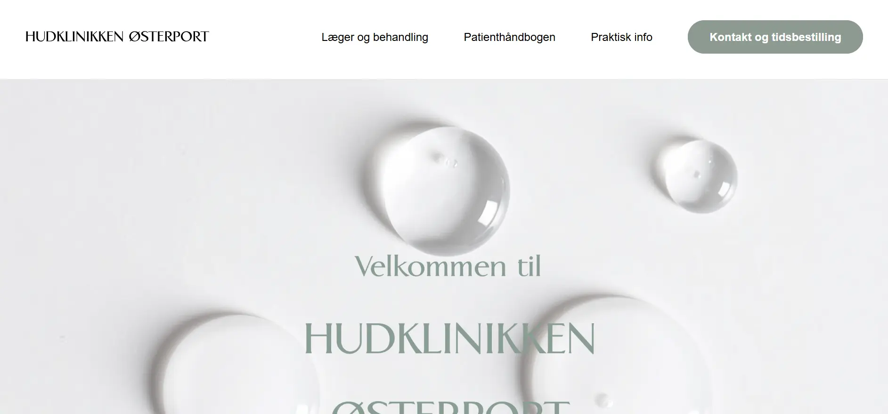

Her er mine udvalgte projekter fra mit 1. semester på multimediedesign.
Projekterne viser mit arbejde med digitalt design, UX/UI og frontend-udvikling.
PROJEKTER

VIRKSOMHEDS-SITE
Dette projekt er et gruppearbejde, hvor vi arbejdede med redesign af Hudklinikken
Østerports website.
Formålet var at skabe et mere moderne og brugervenligt website med et tydeligere
visuelt udtryk.
Projektet tog udgangspunkt i analyse af den eksisterende hjemmeside og
resulterede i et nyt designforslag
med fokus på overskuelig navigation og klar formidling af klinikkens ydelser.
Emnesitet var det første projekt, hvor jeg selv havde ansvar for valg af indhold
og tema. Projektet havde fokus på
struktur, layout og visuel sammenhæng samt på at omsætte idéer til et færdigt
website.
I projektet blev jeg introduceret til designprocessen og arbejdede blandt andet
med sketching som Crazy 8’s og solution
sketch, moodboards, style-tiles, wireframes samt LoFi- og HiFi-design. Derudover
arbejdede jeg med AI-genererede
billeder som en del af den visuelle proces. Projektet gav mig en
helhedsforståelse for, hvordan idé, design og kode
hænger sammen i udviklingen af et website.
Website-projektet var mit første website, hvor jeg arbejdede ud fra et
mobile-first princip. Her havde jeg fokus på at
skabe et responsivt website, der fungerer godt på både mobil og desktop.
I projektet arbejdede jeg med CSS Grid, media queries og designprocesser som
moodboards og wireframes. Projektet
styrkede min forståelse for responsivt design og sammenhængen mellem visuelle
valg og funktionalitet.
Sandbox-sitet fungerede som et opfriskningsprojekt, hvor jeg genopfriskede mine
færdigheder i HTML og CSS, inden vi gik
i gang med virksomhedssitet. Projektet havde fokus på struktur, layout og
grundlæggende designprincipper.
Her arbejdede jeg med opbygning af sider, visuel sammenhæng og afprøvning af
designvalg, hvilket gav mig et bedre
fagligt udgangspunkt for det efterfølgende arbejde med et større og mere
komplekst website.